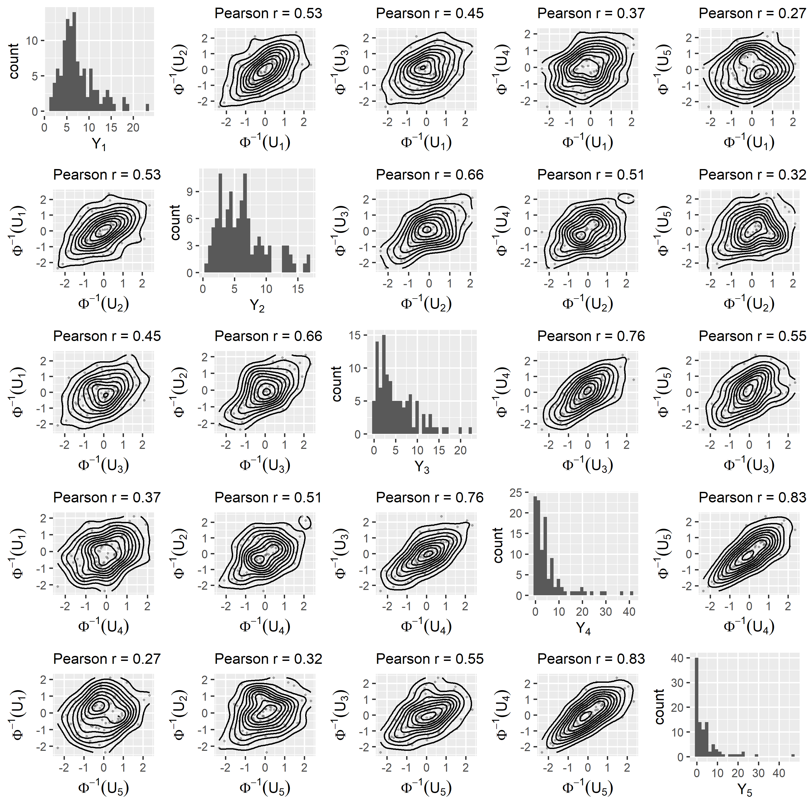
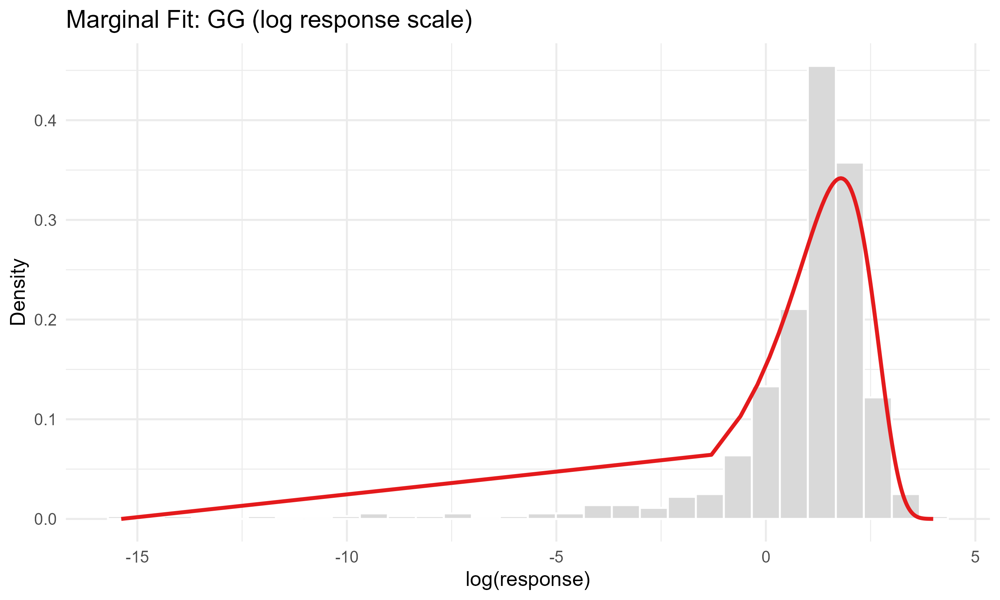
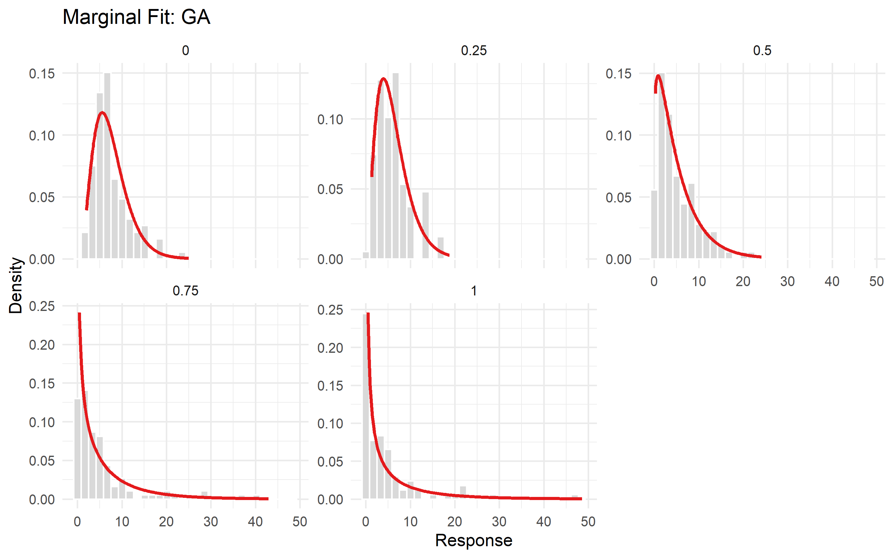
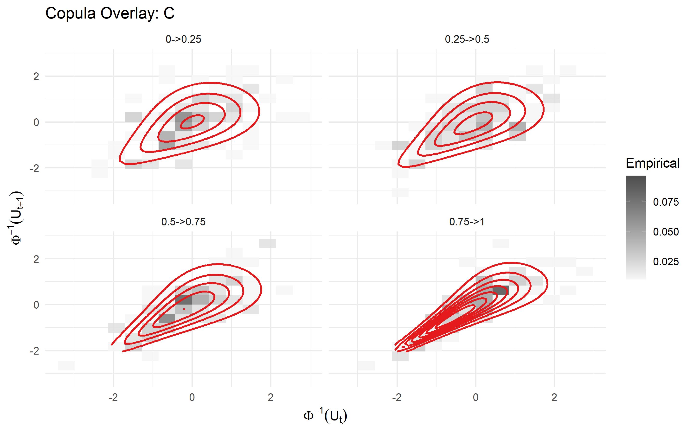
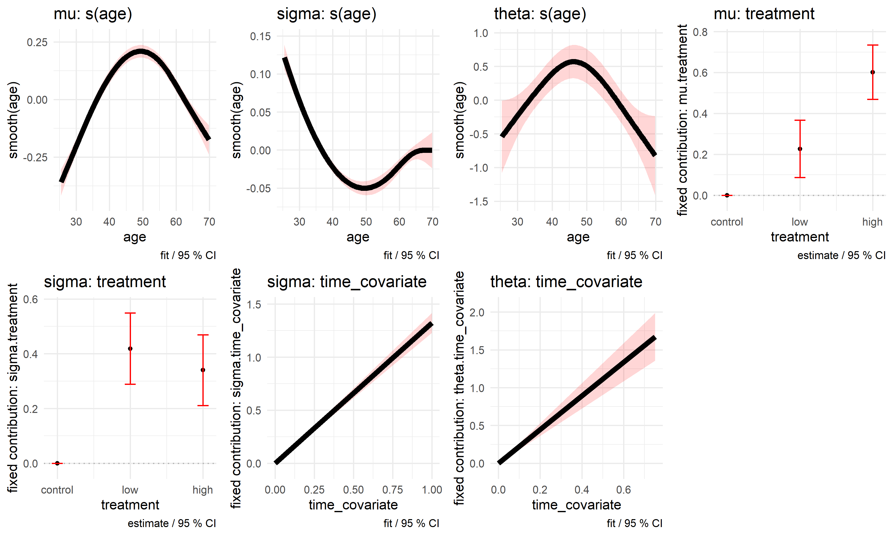
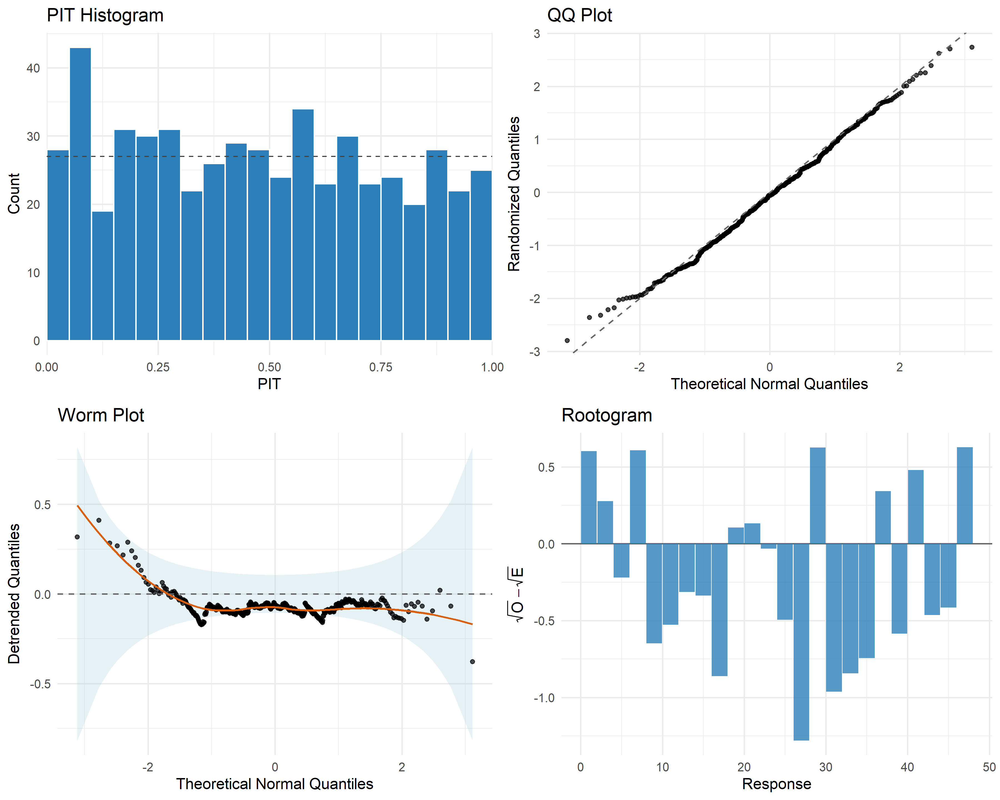
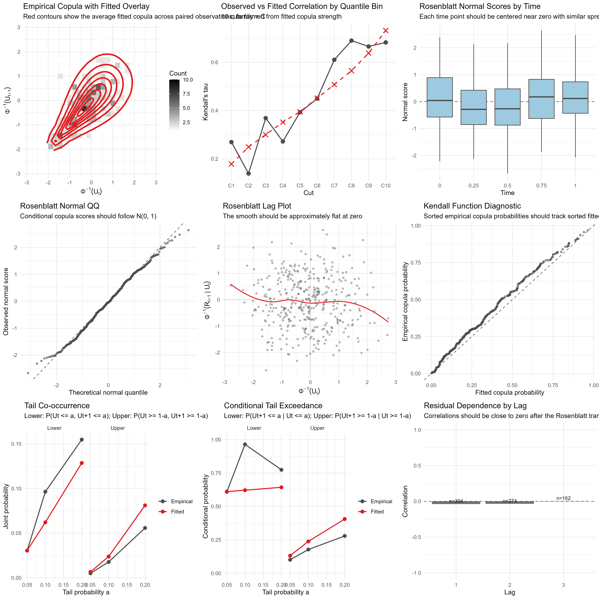

Detailed worked example for a longitudinal gamlss model fit
Source:vignettes/native-simulation-workflow.Rmd
native-simulation-workflow.RmdThis vignette shows an end-to-end workflow for fitting a simulated longitudinal dataset with a longitudinal gamlss model with gamlss margins and copula dependence using gamlss.longitudinal.
The example is simulated so that we can compare the fitted model with the known truth, but the same workflow is intended for a real dataset (excluding simulation of the dataset, of course).
The workflow is:
- Simulate a longitudinal dataset using builtin helper
simulate_longitudinal_dataset() - Inspect the marginal response, covariates, missingness, and pairwise dependence,
- Select a marginal distribution and copula family,
- Fit the longitudinal model incuding covariate selection,
- Review the final model fit,
- Answer applied questions with prediction, marginal effects, simulation, and benchmark comparisons.
For simplicity, a number of decisions on covariate structure are shortened based on the known structure of the underlying data with some illustrative comparisons between alternatives, however in an unknown data context of course a large number of alternative covariate structures may be tested.
First we load required packages for this vignette:
For installation of gamlss.longitudinal, use
remotes::install_github("ahibbert/gamlss.longitudinal").
Simulate Data
We simulate a longitudinal dataset with 120 subjects with
observations at 5 time points. The simulated response is generalized
gamma (GG()) distributed with skewed low-value correlation
between time points generated using a Clayton copula. A 10% response
missingness is applied at random.
We also include the following covariates:
- a three-level treatment group:
control,low, orhigh; - a subject-level age generated uniformly between 25 and 70;
- a repeated observation time scaled to
[0, 1].
Simulation code
set.seed(20260521)
n_subject <- 120
time_points <- seq(0, 1, length.out = 5)
treatment_effect <- c(control = 0, low = 0.30, high = 0.65)
truth_mu_age_smooth <- function(x) {
sim_smooth_bump(x, amplitude = 0.60, location = 0.62, width = 0.18) +
sim_smooth_sin(x, amplitude = 0.16)
}
truth_sigma_age_smooth <- function(x) {
sim_smooth_u(x, amplitude = 0.45)
}
truth_theta_age_smooth <- function(x) {
sim_smooth_bump(x, amplitude = 1, location = 0.45, width = 0.22)
}
dat <- simulate_longitudinal_dataset(
n = n_subject,
times = time_points,
margin_dist = GG(mu.link = "log", sigma.link = "log", nu.link = "identity"),
copula_dist = "C",
covariates = function(base) {
simulate_longitudinal_covariates(
base,
subject = list(
treatment = function(subject_data) {
factor(
sample(c("control", "low", "high"), nrow(subject_data), replace = TRUE),
levels = c("control", "low", "high")
)
},
age = function(subject_data) stats::runif(nrow(subject_data), 25, 70)
),
observation = list(
time_scaled = function(long_data) sim_rescale01(long_data$time)
)
)
},
margin_params = list(
mu = function(d) {
age_scaled <- sim_rescale01(d$age)
eta_mu <- 1.00 +
sim_factor_effect(d$treatment, treatment_effect) +
0.35 +
truth_mu_age_smooth(age_scaled)
exp(eta_mu)
},
sigma = function(d) {
age_scaled <- sim_rescale01(d$age)
eta_sigma <- -1.05 +
0.25 * sim_factor_effect(d$treatment, c(control = 0, low = 1, high = 1)) +
1.25 * d$time_scaled +
truth_sigma_age_smooth(age_scaled)
exp(eta_sigma)
},
nu = function(d) {
age_scaled <-
1.15 + 0.55
}
),
copula_params = list(
theta = function(e) {
age_scaled <- sim_rescale01(e$age)
time_left_scaled <- sim_rescale01(e$time_left)
eta_theta <- -0.70 +
1.80 * time_left_scaled +
truth_theta_age_smooth(age_scaled)
exp(eta_theta)
}
),
seed = 20260521
)
dat$age_scaled <- sim_rescale01(dat$age)
missing_weight <- stats::plogis(
-0.70 +
1.15 * dat$time_scaled +
0.45 * (dat$treatment == "high") -
0.30 * dat$age_scaled
)
missing_rows <- sample(
seq_len(nrow(dat)),
size = round(0.10 * nrow(dat)),
replace = FALSE,
prob = missing_weight
)
dat$response[missing_rows] <- NA_real_
dat$response_missing <- is.na(dat$response)
dataset=dat[,c("subject", "time", "response", "treatment", "age")]Inspect The Response
Our first check is to ensure the dataset is in the correct shape to ingest in the gamlss_longitudinal fit. The data should include:
- one row per subject and time combination,
- one column for each of the response, subject identifier and timepoint, and
- timepoint should be an ordered factor (or will be automatically
ordered using
order()).
# Check data columns / subject/time counts
str(dataset)
#> 'data.frame': 600 obs. of 5 variables:
#> $ subject : Factor w/ 120 levels "1","2","3","4",..: 1 1 1 1 1 2 2 2 2 2 ...
#> $ time : num 0 0.25 0.5 0.75 1 0 0.25 0.5 0.75 1 ...
#> $ response : num 14.063 12.732 5.384 NA 0.247 ...
#> $ treatment: Factor w/ 3 levels "control","low",..: 3 3 3 3 3 2 2 2 2 2 ...
#> $ age : num 34.6 34.6 34.6 34.6 34.6 ...
table(dataset$treatment)
#>
#> control low high
#> 150 210 240
table(dataset$time)
#>
#> 0 0.25 0.5 0.75 1
#> 120 120 120 120 120Since missingness and dropout in particular is common in longitudinal
datasets, we include an internal helper to summarise overall
missingness. check_missingness() summarises the missingness
in the response overall then builds a simple logisitic regression for
the response against included predictors to screen for any strong
trends. This can be treated as an indicator of whether missingness at
random can be reasonably assumed based on the included features, however
it cannot rule out other factors that may be driving missingness. In
this case, time is considered as related to missingness (i.e. dropout)
but no other factors are found to be significant at p=0.05
which is the default for warnings.
missingness_check <- check_missingness(
dataset,
response_var = "response",
time_var = "time",
subject_var = "subject",
predictors = c("time", "treatment", "age")
)
print(missingness_check)
#>
#> Response Missingness Check
#> --------------------------
#> n n_missing prop_missing
#> 600 60 0.1
#>
#> Assessment: covariate_related_missingness
#> Response missingness is associated with observed predictor(s): time . This is compatible with MAR conditional on the observed predictors, but it does not rule out MNAR.
#>
#> Predictor tests:
#> term statistic df p_value
#> time 5.4370 1 0.01971
#> treatment 5.7599 2 0.05614
#> age 0.3881 1 0.53329As these are longitudinal data, time is often a factor which may influence the shape of the joint distribution. We first briefly review the moments of the observed marginal distribution and the correlation structure against time to inform model selection. In this case, there is not a strong effect of time on the mean on initial inspection but there is clearly a trend in variance, skewness and kurtosis over time. Reviewing the pairwise correlation over time (the first off-diagonal), it appears there may also be a trend in increasing correlation for adjacent observations over time, with decreasing correlation with time-distance as is often common in longitudinal data.
aggregate(response ~ time, dataset, \(x) {
x <- x[!is.na(x)]
c(mean = mean(x),
var = var(x),
skew = mean((x - mean(x))^3) / sd(x)^3,
kurt = mean((x - mean(x))^4) / sd(x)^4)
})
#> time response.mean response.var response.skew response.kurt
#> 1 0.00 7.5026530 15.9464317 1.2445134 4.7531921
#> 2 0.25 6.1712956 13.6168051 0.9349299 3.3786179
#> 3 0.50 5.2590809 20.6433649 1.2684042 4.4610233
#> 4 0.75 5.4392198 57.3775583 2.5454634 10.0150800
#> 5 1.00 4.4063413 50.4118173 3.1359385 15.6310270
cor(reshape(dataset[c("subject", "time", "response")],
idvar = "subject", timevar = "time", direction = "wide")[-1],
use = "pairwise.complete.obs")
#> response.0 response.0.25 response.0.5 response.0.75 response.1
#> response.0 1.0000000 0.4483821 0.4098473 0.3300501 0.1857214
#> response.0.25 0.4483821 1.0000000 0.6086610 0.4939688 0.1723208
#> response.0.5 0.4098473 0.6086610 1.0000000 0.6569918 0.2679377
#> response.0.75 0.3300501 0.4939688 0.6569918 1.0000000 0.5199290
#> response.1 0.1857214 0.1723208 0.2679377 0.5199290 1.0000000We can also visually inspect the response and dependence between
timepoints using the included helper plot_dist(). The
function plots the marginal distribution for each time point on the
negative diagonal then the normal-transformed pseudo-observations
against one another to provide a view of the correlation between each
pair of margins. It’s clear from the plots that:
- there is increasing skewness / tail over time (see the negative diagonal),
- the overall level of correlation increases with time (see row 1, col 2 versus row 4, col 5),
- the shape of the correlation is skewed to low-value correlation (see row 4, col 5)
So this informs our model that it’s likely both the copula and marginal parameters (at least beyond the mean) will likely depend on time in some way. This can often be an important part of the distribution selection (see next section).
plot_dist(
dataset,
margin_dist = GG(mu.link = "log", sigma.link = "log", nu.link = "identity"),
subject_var = "subject",
time_var = "time",
response_var = "response"
)
Choose A Marginal Distribution
The response here is continuous and positive. For any distribution we
can use the function select_margin() to fit an
intercept-only model to the response distribution and provide a ranked
list of fits by likelihood criteria (default is AIC).
margin_selection <- select_margin(
dataset,
response_var = "response",
time_var = "time",
type = "realplus"
)
print(margin_selection)
#>
#> Marginal Distribution Screen
#> ----------------------------
#> Selected: BCPEo
#>
#> family AIC type screen_model rank delta_AIC
#> BCPEo 2886.334 realplus pooled_intercept 1 0.000000e+00
#> BCPE 2886.334 realplus pooled_intercept 2 1.067747e-09
#> BCT 2888.053 realplus pooled_intercept 3 1.718650e+00
#> BCTo 2888.053 realplus pooled_intercept 4 1.718650e+00
#> BCCG 2892.121 realplus pooled_intercept 5 5.787225e+00
#> BCCGo 2892.121 realplus pooled_intercept 6 5.787225e+00
#> GB2 2902.372 realplus pooled_intercept 7 1.603843e+01
#> GG 2929.585 realplus pooled_intercept 8 4.325148e+01
#> GA 2954.450 realplus pooled_intercept 9 6.811586e+01
#> GIG 2956.450 realplus pooled_intercept 10 7.011586e+01The BCPEo is selected as the best fitting distribution
as it is highly flexible and is able the capture the shape of the shared
distribution. However, given we know that time is a strong component of
the moments, the best model is likely to be using a marginal
distribution which can change with time.
We can set the option time_intercepts=TRUE in
select_margin which allows each parameter of the marginal
distribution to vary with time. This method then selects
GG() and GA() as the best models by AIC. We
will take these two distributions forwards as our two potential
distributions for the final model, depending on whether the additional
parameter for the GG() over the GA() adds
sufficent fit to account for the additional degrees of freedom
consumed.
margin_selection <- select_margin(
dataset,
response_var = "response",
time_var = "time",
type = "realplus",
time_intercepts = TRUE
)
margin_selection
#>
#> Marginal Distribution Screen
#> ----------------------------
#> Selected: GA
#>
#> family AIC type screen_model pooled_AIC converged rank delta_AIC
#> GA 2687.496 realplus time_intercepts 2954.450 TRUE 1 0.000000
#> GG 2694.061 realplus time_intercepts 2929.585 TRUE 2 6.565322
#> GB2 2706.209 realplus time_intercepts 2902.372 FALSE 3 18.713260
#> BCTo 2706.904 realplus time_intercepts 2888.053 TRUE 4 19.408152
#> BCT 2706.904 realplus time_intercepts 2888.053 TRUE 5 19.408163
#> WEI 2711.468 realplus time_intercepts 2970.726 TRUE 6 23.972717
#> WEI3 2711.468 realplus time_intercepts 2970.726 TRUE 7 23.972726
#> WEI2 2711.474 realplus time_intercepts 2970.726 TRUE 8 23.977945
#> LOGNO2 2803.629 realplus time_intercepts 3364.255 TRUE 9 116.133256
#> LOGNO 2803.629 realplus time_intercepts 3364.255 TRUE 10 116.133256
#>
#> Warning: one or more printed time-intercept marginal fits did not report convergence.We can review the fitted margin over the overall distribution using
plot_margin_fit().
For illustration we’ll compare the fit without time-varying intercepts to the fit with time-varying intercepts.
First let’s review the fit without time intercepts.
margin_overlay_plots <- list(
plot_margin_fit(
dataset,
margin_dist = GA(),
response_var = "response",
bins = 30,
time_var = "time",
plot = FALSE
)$plot,
plot_margin_fit(
dataset,
margin_dist = GG(),
response_var = "response",
bins = 30,
time_var = "time",
plot = FALSE
)$plot
)
ggpubr::ggarrange(plotlist = margin_overlay_plots, ncol = 2, nrow = 1)
Clearly the GA() and GG() are not fitting
well here, which is why the BCPE() was selected as the best
non-time-varying model.
We can review the fits over time by selecting
by_time=TRUE in plot_margin_fit. With this
faceting, GA() and GG() closely follow the
changing shape of the distribution over time as implied by the
likelihood criteria. While it’s not a strong effect, it appears the
GG() captures the extreme distributions at first and last
timepoints slightly more accurately than the base GA()
model, but both capture the changing shape of the distribution
reasonably.
plot_margin_fit(
dataset,
margin_dist = GA(),
time_intercepts = TRUE,
by_time = TRUE,
time_var ="time",
response_var = "response"
)
plot_margin_fit(
dataset,
margin_dist = GG(),
time_intercepts = TRUE,
by_time = TRUE,
time_var = "time",
response_var = "response"
)
Choose A Copula Family
Once we have a starting fit for the margin, we can select a copula
distribution. The copula distribution depends on the shape of the margin
so the margin must be selected first. We do provide the option for
choosing both margin and copula jointly using
select_joint_distribution() however this is quite a slow
fit, and generally does not select differently to the much faster
process using select_margin() followed by
select_copula(). Instead we would suggest sensitivity /
alternative testing for a final selection of margins or copulas, or for
the final fitted model, rather than spending compute time at the early
stage before covariates are selected.
select_copula() asseses available copula fits by
likelihood criteria for the starting marginal model. The copula is fit
on pseudo-observations which have been created using the marginal fit.
The user can either pass in the best model from
select_margin() using
margin_dist=margin_selection or can specify a marginal fit
with margin_dist and
time_intercepts=TRUE/FALSE. If the user really wants, they
can also fully specify a gamlss.longitudinal model with
formulas for all the intercepts and select a copula that way, however we
would suggest this as a final sensitivity test rather than at this stage
since covariates are not yet reviewed.
As dependence structure can also shift with time, we also provide the
option to provide time-based intercepts in the
select_copula() function using
copula_time_intercepts=TRUE in case the changing shape over
time selects a different copula family than a static single parameter as
was the case for marginal parameters.
We provide selection here for GA() (using
margin_dist=margin_selection) and GG()
(directly specifying margin_dist and
time_intercepts) with both time-varying and
non-time-varying copula paramter.
In this case, the best fitting copula is Clayton both with and without a time covariate for the copula parameter. All four options select the Clayton copula so we move forward with this.
copula_selection <- select_copula(
data = dataset,
response_var = "response",
margin_dist = margin_selection,
subject_var = "subject",
time_var = "time"
)
print(copula_selection)
#> family par par2 tau logLik AIC BIC n_pairs
#> 1 t 0.6994834 6 0.4931730 136.22365 -268.4473 -260.4946 394
#> 2 C 1.5331365 0 0.4339307 132.78513 -263.5703 -259.5939 394
#> 3 N 0.6926152 0 0.4870831 129.73924 -257.4785 -253.5021 394
#> 4 F 5.7673936 0 0.5017071 122.51872 -243.0374 -239.0611 394
#> 5 G 1.8307929 0 0.4537886 110.49402 -218.9880 -215.0117 394
#> 6 J 1.9420289 0 0.3419512 71.33603 -140.6721 -136.6957 394
copula_selection <- select_copula(
data = dataset,
response_var = "response",
margin_dist = margin_selection,
subject_var = "subject",
time_var = "time",
copula_time_intercepts = TRUE
)
print(copula_selection)
#> family par par2 tau logLik AIC BIC n_copula_time_levels
#> 1 C NA 0 0.4431982 149.95523 -291.9105 -276.0050 4
#> 2 t NA NA 0.5014935 151.52320 -287.0464 -255.2356 4
#> 3 N NA 0 0.4949967 145.08277 -282.1655 -266.2601 4
#> 4 F NA 0 0.5017947 136.17264 -264.3453 -248.4399 4
#> 5 G NA 0 0.4548704 120.62797 -233.2559 -217.3505 4
#> 6 J NA 0 0.3472754 78.31384 -148.6277 -132.7223 4
#> n_pairs
#> 1 394
#> 2 394
#> 3 394
#> 4 394
#> 5 394
#> 6 394
copula_selection <- select_copula(
data = dataset,
response_var = "response",
margin_dist = GG(),
time_intercepts = TRUE,
subject_var = "subject",
time_var = "time"
)
print(copula_selection)
#> family par par2 tau logLik AIC BIC n_pairs
#> 1 t 0.6908198 4 0.4855004 137.0033 -270.0067 -262.0540 394
#> 2 C 1.5312958 0 0.4336357 132.6829 -263.3657 -259.3894 394
#> 3 N 0.6929039 0 0.4873380 129.9614 -257.9229 -253.9465 394
#> 4 F 5.7633204 0 0.5014841 122.2383 -242.4766 -238.5003 394
#> 5 G 1.8389989 0 0.4562259 111.9140 -221.8281 -217.8517 394
#> 6 J 1.9600796 0 0.3460953 73.0801 -144.1602 -140.1839 394
copula_selection <- select_copula(
data = dataset,
response_var = "response",
margin_dist = GG(),
time_intercepts = TRUE,
subject_var = "subject",
time_var = "time",
copula_time_intercepts = TRUE
)
print(copula_selection)
#> family par par2 tau logLik AIC BIC n_copula_time_levels
#> 1 C NA 0 0.4451424 152.93507 -297.8701 -281.9647 4
#> 2 t NA NA 0.5024956 152.81188 -289.6238 -257.8130 4
#> 3 N NA 0 0.4950534 144.72822 -281.4564 -265.5510 4
#> 4 F NA 0 0.5015021 136.22741 -264.4548 -248.5494 4
#> 5 G NA 0 0.4578189 121.54984 -235.0997 -219.1943 4
#> 6 J NA 0 0.3507796 79.20618 -150.4124 -134.5070 4
#> n_pairs
#> 1 394
#> 2 394
#> 3 394
#> 4 394
#> 5 394
#> 6 394
copula_selection <- select_copula(
data = dataset,
response_var = "response",
margin_dist = GG(),
subject_var = "subject",
time_var = "time",
time_intercepts = TRUE,
copula_time_intercepts = TRUE
)
print(copula_selection)
#> family par par2 tau logLik AIC BIC n_copula_time_levels
#> 1 C NA 0 0.4451424 152.93507 -297.8701 -281.9647 4
#> 2 t NA NA 0.5024956 152.81188 -289.6238 -257.8130 4
#> 3 N NA 0 0.4950534 144.72822 -281.4564 -265.5510 4
#> 4 F NA 0 0.5015021 136.22741 -264.4548 -248.5494 4
#> 5 G NA 0 0.4578189 121.54984 -235.0997 -219.1943 4
#> 6 J NA 0 0.3507796 79.20618 -150.4124 -134.5070 4
#> n_pairs
#> 1 394
#> 2 394
#> 3 394
#> 4 394
#> 5 394
#> 6 394If the user wishes to compare a few combinations of fits for overall
joint distribution, this is a reasonable point to confirm using
select_joint_distribution(). For example, let’s compare the
GA, GG and a benchmark standard normal
NO, and compare fits for N and C
copulas with time intercepts for both margin and copula fits. This takes
about 30 seconds to run for this example. The selected joint fits are
GA+C as the best AIC/BIC and GG+C as the best
log likelihood which agrees with the previous process.
joint_selection <- select_joint_distribution(
data = dataset,
response_var = "response",
subject_var = "subject",
time_var = "time",
time_intercepts = TRUE,
copula_time_intercepts = TRUE,
margin_families = c("GA", "GG", "NO"),
copula_families = c("N", "C")
)
print(joint_selection)
#>
#> Joint Distribution Screen
#> -------------------------
#> Selected: GA+C
#> Criterion: AIC
#>
#> rank margin_family copula_family logLik AIC BIC EDF converged
#> 1 GA C -1180.985 2389.971 2451.528 14 TRUE
#> 2 GG C -1176.935 2391.870 2475.412 19 FALSE
#> 3 GG N -1179.337 2396.673 2480.215 19 TRUE
#> 4 GA N -1187.644 2403.288 2464.845 14 TRUE
#> 5 NO C -1455.730 2939.460 3001.017 14 TRUE
#> 6 NO N -1566.724 3161.448 3223.005 14 TRUE
#> elapsed_sec error
#> 5.854428 <NA>
#> 18.307270 <NA>
#> 10.838582 <NA>
#> 1.837912 <NA>
#> 8.996845 <NA>
#> 4.105405 <NA>
#>
#> Warning: one or more printed joint candidate fits did not report convergence.We can now review the copula fit visually using
plot_copula_fit. The updated fit appears to accurately
capture the low-dependence shape of the data as well as the increasing
correlation over time.
plot_copula_fit(
dataset,
margin_dist = margin_selection,
copula_dist = copula_selection,
subject_var = "subject",
time_var = "time",
response_var = "response",
by_time = TRUE,
bins=14
)
Fit The Longitudinal Model
Model fitting for gamlss.longitudinal should always
follow the parameter heirarchy for the margin,
mu -> sigma -> nu -> tau, and for the copula
theta -> zeta. There is not a strict heirarchy between
marginal versus copula paramters as copula parameters can affect the
standard errors for the margin, resulting in different parameters being
significant in the margin, and marginal parameters can affect the copula
fit so the process is necessarily iterative. However, in general it is
reasonable to get a good fit for the margin with the most significant
factors before iterating on covariate fits for the copula parameter.
Following a strict margin before copula process will generally yield
similar results, though may result in removing some previously
significant factors (or adding previously insiginficant factors) from
the margin depending on the copula fit.
We will use the GG() fit to start for the additional
flexibility for the additional parameter, and if it is not significant
with an intercept or covariates then we can reduce the model the
GA(). The selected copula was C under all
margin settings so we will use this.
Let’s begin by inspecting a fully specified model with factor terms
for time and treatment, and a smooth term for
age on every covariate.
fit_fullyspecified <- gamlss_longitudinal(
dataset = dat,
margin_dist = GG(),
copula_dist = "C",
time_var = "time",
subject_var = "subject",
mu.formula = response ~ treatment + as.factor(time) + s(age),
sigma.formula = ~ treatment + as.factor(time) + s(age),
nu.formula = ~ treatment + as.factor(time) + s(age),
theta.formula = ~ treatment + as.factor(time) + s(age)
)
summary(fit_fullyspecified)
#>
#> GAMLSS Longitudinal Model Summary
#> --------------------------------
#> Margin distribution: GG
#> Copula distribution: C
#> Observations: 600 | Subjects: 120 | Time points: 5
#> Fixed coefficients: 27 | Smooth terms: 4 | Smooth EDF: 10.6613
#> VCOV: analytical | Requested: analytical
#> Hessian condition number: 135685
#>
#> Fixed coefficients:
#> --------------------
#> [mu]
#> term estimate std_error p_value signif
#> mu.intercept 1.6953 0.0601 <0.00001 ***
#> mu.treatmentlow 0.2142 0.0923 0.02026 *
#> mu.treatmenthigh 0.5960 0.1089 <0.00001 ***
#> mu.as.factor(time_covariate)0.25 -0.1848 0.0753 0.01407 *
#> mu.as.factor(time_covariate)0.5 -0.1396 0.0972 0.15087
#> mu.as.factor(time_covariate)0.75 -0.0247 0.1763 0.88840
#> mu.as.factor(time_covariate)1 -0.1632 0.6039 0.78690
#> --------------------
#> [sigma]
#> term estimate std_error p_value signif
#> sigma.intercept -1.2832 0.1454 <0.00001 ***
#> sigma.treatmentlow 0.4950 0.1038 <0.00001 ***
#> sigma.treatmenthigh 0.3377 0.2825 0.23192
#> sigma.as.factor(time_covariate)0.25 0.2696 0.1295 0.03729 *
#> sigma.as.factor(time_covariate)0.5 0.6712 0.1525 0.00001 ***
#> sigma.as.factor(time_covariate)0.75 1.0371 0.1164 <0.00001 ***
#> sigma.as.factor(time_covariate)1 1.3187 0.4565 0.00387 **
#> --------------------
#> [nu]
#> term estimate std_error p_value signif
#> nu.intercept 1.3850 0.9157 0.13041
#> nu.treatmentlow 0.0033 0.4586 0.99423
#> nu.treatmenthigh 0.0701 1.2710 0.95599
#> nu.as.factor(time_covariate)0.25 -0.2116 0.7853 0.78755
#> nu.as.factor(time_covariate)0.5 0.0873 0.7791 0.91076
#> nu.as.factor(time_covariate)0.75 -0.0015 0.7385 0.99842
#> nu.as.factor(time_covariate)1 0.0899 1.6696 0.95707
#> --------------------
#> [theta]
#> term estimate std_error p_value signif
#> theta.intercept -0.6847 0.2238 0.00221 **
#> theta.treatmentlow 0.3055 0.1260 0.01532 *
#> theta.treatmenthigh 0.0479 0.1300 0.71282
#> theta.as.factor(time_covariate)0.25 0.7393 0.2790 0.00806 **
#> theta.as.factor(time_covariate)0.5 1.3226 0.2266 <0.00001 ***
#> theta.as.factor(time_covariate)0.75 1.7621 0.2184 <0.00001 ***
#> Signif. codes: 0 '***' 0.001 '**' 0.01 '*' 0.05 '.' 0.1 ' ' 1
#>
#> Smooth terms:
#> --------------------
#> parameter smooth_term edf
#> mu s(age) 2.9050
#> sigma s(age) 3.2625
#> nu s(age) 2.2068
#> theta s(age) 2.2870
#> Use plot(object) to visualize smooth and fixed terms with confidence bands.
#>
#> Model Selection Criteria:
#> --------------------
#> marginal copula joint
#> LogLik -1260.6031 159.3641 -1101.2390
#> AIC 2579.9548 -302.1542 2277.8006
#> BIC 2709.1116 -265.7168 2443.3948
#> EDF 29.3743 8.2870 37.6613
#> --------------------------------Overall we see time is a significant factor for sigma
and theta but in this form does not appear to be
significant for mu or nu. No covariates for
nu appear to be significant at p=0.01
including the intercept. Degrees of freedom for age smooths for
nu and theta are small which may indicate they
are not material to the fit so we will review these. Treatment effect
appears to be significant initially for mu and
sigma but not for nu or
theta.
We start with mu and note the significant treatment
effect but minimal effect due to time so we can test alternative forms
or remove.
fit_mulineartime <- gamlss_longitudinal(
dataset = dataset,
margin_dist = GG(),
copula_dist = "C",
time_var = "time",
subject_var = "subject",
mu.formula = response ~ treatment + (time) + s(age),
sigma.formula = ~ treatment + as.factor(time) + s(age),
nu.formula = ~ treatment + as.factor(time) + s(age),
theta.formula = ~ treatment + as.factor(time) + s(age)
)
fit_munotime <- gamlss_longitudinal(
dataset = dataset,
margin_dist = GG(),
copula_dist = "C",
time_var = "time",
subject_var = "subject",
mu.formula = response ~ treatment + s(age),
sigma.formula = ~ treatment + as.factor(time) + s(age),
nu.formula = ~ treatment + as.factor(time) + s(age),
theta.formula = ~ treatment + as.factor(time) + s(age)
)
fit_sigmalineartime <- gamlss_longitudinal(
dataset = dataset,
margin_dist = GG(),
copula_dist = "C",
time_var = "time",
subject_var = "subject",
mu.formula = response ~ treatment + s(age),
sigma.formula = ~ treatment + (time) + s(age),
nu.formula = ~ treatment + as.factor(time) + s(age),
theta.formula = ~ treatment + as.factor(time) + s(age)
)
fit_nutimeonly <- gamlss_longitudinal(
dataset = dataset,
margin_dist = GG(),
copula_dist = "C",
time_var = "time",
subject_var = "subject",
mu.formula = response ~ treatment + s(age),
sigma.formula = ~ treatment + (time) + s(age),
nu.formula = ~ as.factor(time),
theta.formula = ~ treatment + as.factor(time) + s(age)
)
fit_nutrtonly <- gamlss_longitudinal(
dataset = dataset,
margin_dist = GG(),
copula_dist = "C",
time_var = "time",
subject_var = "subject",
mu.formula = response ~ treatment + s(age),
sigma.formula = ~ treatment + (time) + s(age),
nu.formula = ~ treatment,
theta.formula = ~ treatment + as.factor(time) + s(age)
)
fit_nuageonly <- gamlss_longitudinal(
dataset = dataset,
margin_dist = GG(),
copula_dist = "C",
time_var = "time",
subject_var = "subject",
mu.formula = response ~ treatment + s(age),
sigma.formula = ~ treatment + (time) + s(age),
nu.formula = ~ s(age),
theta.formula = ~ treatment + as.factor(time) + s(age)
)
fit_nuinterceptonly <- gamlss_longitudinal(
dataset = dataset,
margin_dist = GG(),
copula_dist = "C",
time_var = "time",
subject_var = "subject",
mu.formula = response ~ treatment + s(age),
sigma.formula = ~ treatment + (time) + s(age),
nu.formula = ~ 1,
theta.formula = ~ treatment + as.factor(time) + s(age)
)
fit_thetalineartime <- gamlss_longitudinal(
dataset = dataset,
margin_dist = GG(),
copula_dist = "C",
time_var = "time",
subject_var = "subject",
mu.formula = response ~ treatment + s(age),
sigma.formula = ~ treatment + (time) + s(age),
nu.formula = ~ 1,
theta.formula = ~ treatment + (time) + s(age)
)
fit_thetalineartime_notrt <- gamlss_longitudinal(
dataset = dataset,
margin_dist = GG(),
copula_dist = "C",
time_var = "time",
subject_var = "subject",
mu.formula = response ~ treatment + s(age),
sigma.formula = ~ treatment + (time) + s(age),
nu.formula = ~ 1,
theta.formula = ~ (time) + s(age)
)
fit_thetalineartime_notrt_noage <- gamlss_longitudinal(
dataset = dataset,
margin_dist = GG(),
copula_dist = "C",
time_var = "time",
subject_var = "subject",
mu.formula = response ~ treatment + s(age),
sigma.formula = ~ treatment + (time) + s(age),
nu.formula = ~ 1,
theta.formula = ~ (time)
)
likelihood_compare(fit_fullyspecified, fit_mulineartime, fit_munotime)
#>
#> Likelihood Comparison for gamlss.longitudinal
#> --------------------------------------------
#> Sequential LR rows compare each model with the previous row.
#>
#> model n_obs df logLik AIC BIC delta_df LR_statistic p_value
#> model_3 600 33.60 -1105 2277 2425 NA NA NA
#> model_2 600 34.66 -1104 2278 2430 1.065 1.575 0.2254
#> model_1 600 37.66 -1101 2278 2443 3.000 6.145 0.1048Fits for mu with linear and non-linear time both return
non-significant effects at p=0.05. mu with
linear or no time are comparable on likelihood so we select the model
without time for simplicity and by AIC/BIC, with the option to recheck
in final steps.
Now let’s compare models for sigma. Treatment effect is
strongly significant so we will just test a linear instead of factor
time effect for sigma.
likelihood_compare(fit_munotime, fit_sigmalineartime)
#>
#> Likelihood Comparison for gamlss.longitudinal
#> --------------------------------------------
#> Sequential LR rows compare each model with the previous row.
#>
#> model n_obs df logLik AIC BIC delta_df LR_statistic p_value
#> model_2 600 30.64 -1106 2274 2409 NA NA NA
#> model_1 600 33.60 -1105 2277 2425 2.956 2.493 0.4684Linear time for sigma removes three degrees of freedom
and provides better AIC and BIC so we select it as the improved model.
The covariate is highly significant.
Now for nu. The time covariate and treatment effect for
nu are non-significant still after fitting
sigma, and we should review if the smooth is providing
sufficient information as the degrees of freedom are very low. We fit
models for nu with each of the factors individually and
compare against an intercept-only model.
likelihood_compare(fit_sigmalineartime, fit_nutimeonly, fit_nutrtonly, fit_nuageonly, fit_nuinterceptonly)
#>
#> Likelihood Comparison for gamlss.longitudinal
#> --------------------------------------------
#> Sequential LR rows compare each model with the previous row.
#>
#> model n_obs df logLik AIC BIC delta_df LR_statistic p_value
#> model_5 600 22.54 -1109 2262 2361 NA NA NA
#> model_3 600 24.54 -1108 2266 2374 1.9949 0.1538 0.92540
#> model_4 600 24.77 -1109 2267 2376 0.2339 -0.2884 1.00000
#> model_2 600 26.46 -1107 2266 2382 1.6915 4.1847 0.09353
#> model_1 600 30.64 -1106 2274 2409 4.1768 0.3908 0.98666There’s not much difference between the models on likelihood, with
the covariate fits providing minimal extra information and the best
model by AIC being the intercept-only model for nu, so we
select intercept-only.
We now review theta, and test removing treatment effect
and collapse the time factor to linear as well. We should also test the
removal of the age smooth to check if it’s needed.
likelihood_compare(fit_nuinterceptonly, fit_thetalineartime, fit_thetalineartime_notrt, fit_thetalineartime_notrt_noage)
#>
#> Likelihood Comparison for gamlss.longitudinal
#> --------------------------------------------
#> Sequential LR rows compare each model with the previous row.
#>
#> model n_obs df logLik AIC BIC delta_df LR_statistic p_value
#> model_4 600 16.21 -1119 2271 2342 NA NA NA
#> model_3 600 18.58 -1109 2256 2337 2.363 19.6568 8.993e-05
#> model_2 600 20.55 -1109 2258 2349 1.975 1.3228 5.101e-01
#> model_1 600 22.54 -1109 2262 2361 1.990 0.1866 9.097e-01The best model by AIC and BIC selects a linear time effect for
theta, and strongly prefers keeping the age smooth term so
we retain it.
So the final selected model has smooth effects for age for
mu, sigma and theta, a linear
time effect for sigma and theta, and an
intercept for nu.
Review the fit
We provide a brief automated model assessment using
check_model() and return a compact set of basic check
statuses. Check model is reasonably minimal and should be used alongside
other diagnostics; the checks that flag are:
| Area | Quantity checked | Threshold / condition | Overall result |
|---|---|---|---|
| Convergence | Model convergence based on
fit$convergence$converged
|
Not TRUE
|
basic_checks=FAIL |
| Marginal fit | PIT Kolmogorov-Smirnov p-value vs Uniform(0, 1) | ks_p_value < 0.05 |
basic_checks=FAIL |
| Tail fit | Maximum of lower/upper PIT tail ratios across thresholds
0.05 and 0.10
|
max(lower_ratio, upper_ratio) > 2 |
basic_checks=FAIL |
| Copula fit | Absolute lag-1 Rosenblatt normal-score residual correlation after fitted copula | abs(lag1_cor) > 0.25 |
basic_checks=FAIL |
| Variance calculation | Variance-covariance method from summary | vcov_method == "numderiv" |
basic_checks=REVIEW |
Check model will return check_model$basic_checks as:
- “failed” if any
FAIL; - “review” if no
FAILbut at least oneREVIEW; - “passed” if all rows are
PASS.
Note that a PASS result from check_model
doesn’t indicate a good model fit, just that there aren’t any major,
easy-to-test-numerically issues with the overall shape of the model fit
for the margin or the dependence.
fit <- fit_thetalineartime_notrt
check = check_model(fit)
print(check)
#>
#> GAMLSS Longitudinal Model Check
#> ===============================
#> Margin: GG Copula: C
#> LogLik: -1109 Converged: yes
#>
#> Basic Checks
#> ------------
#> Area Status
#> Convergence PASS
#> Marginal fit PASS
#> Tail fit PASS
#> Copula fit PASS
#> Variance calculation PASS
#>
#> Result: PASSED
#> Note: these are basic automated checks; broader model diagnostics should also be reviewed.
#>
#> Scores
#> ------
#> logs mae mse dss
#> 2.35 4.183 32.04 44.97
#>
#> PIT
#> ---
#> n mean sd expected_sd ks_p_value
#> 540 0.4768 0.2882 0.2887 0.1083
#>
#> Tail Calibration
#> ----------------
#> threshold lower upper expected lower_ratio upper_ratio
#> 0.05 0.05185 0.04630 0.05 1.037 0.9259
#> 0.10 0.13148 0.08704 0.10 1.315 0.8704
#>
#> Residual Dependence
#> -------------------
#> lag normal_score_cor n_pairs cutoff
#> 1 -0.03727 394 0.25
#>
#> Use check$checks for thresholds and check$warnings for failed-check details.The final model can be inspected with summary() for a
numerical summary and plot_terms() for a visual review of
covariate fits. In this case all terms are significant and shapes and
confidence intervals for smooth terms appear reasonable.
summary(fit)
#>
#> GAMLSS Longitudinal Model Summary
#> --------------------------------
#> Margin distribution: GG
#> Copula distribution: C
#> Observations: 600 | Subjects: 120 | Time points: 5
#> Fixed coefficients: 10 | Smooth terms: 3 | Smooth EDF: 8.5767
#> VCOV: analytical | Requested: analytical
#> Hessian condition number: 188.3
#>
#> Fixed coefficients:
#> --------------------
#> [mu]
#> term estimate std_error p_value signif
#> mu.intercept 1.6375 0.0463 <0.00001 ***
#> mu.treatmentlow 0.2270 0.0717 0.00156 **
#> mu.treatmenthigh 0.6017 0.0678 <0.00001 ***
#> --------------------
#> [sigma]
#> term estimate std_error p_value signif
#> sigma.intercept -1.2520 0.0594 <0.00001 ***
#> sigma.treatmentlow 0.4186 0.0665 <0.00001 ***
#> sigma.treatmenthigh 0.3402 0.0658 <0.00001 ***
#> sigma.time_covariate 1.3232 0.0476 <0.00001 ***
#> --------------------
#> [nu]
#> term estimate std_error p_value signif
#> nu.intercept 1.5140 0.1643 <0.00001 ***
#> --------------------
#> [theta]
#> term estimate std_error p_value signif
#> theta.intercept -0.3927 0.1549 0.01125 *
#> theta.time_covariate 2.2299 0.2147 <0.00001 ***
#> Signif. codes: 0 '***' 0.001 '**' 0.01 '*' 0.05 '.' 0.1 ' ' 1
#>
#> Smooth terms:
#> --------------------
#> parameter smooth_term edf
#> mu s(age) 2.9169
#> sigma s(age) 3.3359
#> theta s(age) 2.3239
#> Use plot(object) to visualize smooth and fixed terms with confidence bands.
#>
#> Model Selection Criteria:
#> --------------------
#> marginal copula joint
#> LogLik -1268.9968 159.6762 -1109.3207
#> AIC 2566.4993 -310.7046 2255.7947
#> BIC 2629.1679 -291.6928 2337.4751
#> EDF 14.2528 4.3239 18.5767
#> --------------------------------
plot_terms(fit)
#>
#> === Plotting term effects for gamlss.longitudinal object ===
#> Found 3 smooth terms and 4 fixed terms (total: 7 plots).
Key visual diagnostics are available using plot() for
marginal diagnostics and plot_copula_diagnostics() for
dependence diagnostics.
plot(fit)
We will briefly comment on each of the marginal diagnostics and expected shape, though broadly they appear reasonable except some deviation in fit in the lower tail of the distribution.
Marginal diagnostics:
- PIT appears reonasably close to uniform, with small deviation in the lower tail, PIT KS passes in numerical checks
- QQ plot is very close to diagonal except in very low tail, though deviation is small
- Worm plot should be close to centre line without deviation, but we do see some deviation in the lower tail more clearly than we could see in the QQ plot
- Rootogram seems generally centred around zero with no major trends or deviation spikes

All trends for fitted versus observed dependence appear close. There is one small deviation between the fit and the data in the lower tail that can be seen in the Rosenblatt normal QQ plot and the tail co-occurrence / exceedence plots for the lower plot where we are slightly underfitting it appears.
We will briefly comment on each diagnostic for illustration purposes:
- Empirical copula overlay appears to broadly capture the shape of the
2d histogram, we can also plot the final fitted distributions against
the original data using
plot_margin_fit(fit, by_time=TRUE)andplot_copula_fit(fit, by_time=TRUE)if desired which will show the captured changing shape more clearly. - Quantiles of fitted versus observed correlation follow the same trend indicating we are capturing the extremes and the centre of the correlation distribution (i.e. we are at least covering the range of correlation correctly)
- Rosenblatt scores take into account correlation stucture resulting
in conditional estimates for margins, meaning they will tell us if the
joint distribution (margin or copula) is misspecified. We provide
multiple views:
- Rosenblatt scores by margin, which should be normally distributed at each time point (and are), a specific time point being non-normal indicates a specific set of copulas before it or the given margin is incorrectly specified
- Overall Rosenblatt QQ indicates overall normality or the conditional residuals which look reasonable with small deviation in both tails
- Rosenblatt lag plot compared scores at a given time point with the lagged time point, which if correlation is correctly specified then these should be uncorrelated (and the are)
- Kendall’s function dignostic compares fitted copula probabilities across the dataset (sorted) against the empirical sorted copula probabilities and should follow the centre line without systematic deviation. In this case there is a small systematic deviation in the centre which may be worth investigating to improve the fit
- Tail co-occurrence and exceedence compare empirical versus fitted probabiltiy of observations being in the upper and lower tails of the dependence structure and are broadly in line with some deviation in the lower tail, potentially due to the deviation in fit for the margin in the lower tail. This would indicate incorrectly specified tails either in the margin or the copula.
- Residaul dependence by lag should be close to zero if the copula is accurately capturing the dependence which it is here
It’s straightforward to generate standard outputs for regression models such as confidence intervals and wald test
confint(fit)
#> 2.5 % 97.5 %
#> theta.intercept -0.69633689 -0.08903877
#> theta.time_covariate 1.80899031 2.65078221
#> nu.intercept 1.19195808 1.83596612
#> sigma.intercept -1.36835949 -1.13561204
#> sigma.treatmentlow 0.28835743 0.54892517
#> sigma.treatmenthigh 0.21126448 0.46916841
#> sigma.time_covariate 1.22985542 1.41647907
#> mu.intercept 1.54676085 1.72816440
#> mu.treatmentlow 0.08639268 0.36762718
#> mu.treatmenthigh 0.46872278 0.73468394
wald_test(fit)
#>
#> Wald Test for gamlss.longitudinal
#> ---------------------------------
#> Test type: individual
#> VCOV method: analytical
#>
#> term estimate rhs std_error statistic p_value method
#> theta.intercept -0.3927 0 0.15493 -2.535 1.125e-02 analytical
#> theta.time_covariate 2.2299 0 0.21475 10.384 2.939e-25 analytical
#> nu.intercept 1.5140 0 0.16429 9.215 3.109e-20 analytical
#> sigma.intercept -1.2520 0 0.05938 -21.086 1.071e-98 analytical
#> sigma.treatmentlow 0.4186 0 0.06647 6.298 3.016e-10 analytical
#> sigma.treatmenthigh 0.3402 0 0.06579 5.171 2.328e-07 analytical
#> sigma.time_covariate 1.3232 0 0.04761 27.792 5.359e-170 analytical
#> mu.intercept 1.6375 0 0.04628 35.384 3.038e-274 analytical
#> mu.treatmentlow 0.2270 0 0.07174 3.164 1.555e-03 analytical
#> mu.treatmenthigh 0.6017 0 0.06785 8.868 7.424e-19 analyticalIt’s also possible to produce bootstrap confidence intervals from the fitted model though it is computationally quite intensive.
boot <- bootstrap_inference(
fit,
R = 5,
seed = 20260521
)
print(boot)
#>
#> Parametric Bootstrap for gamlss.longitudinal
#> -------------------------------------------
#> Replicates: 5
#> Simulation: fitted copula model
#> Failed refits: 0
#>
#> term estimate bootstrap_mean bootstrap_se conf.low conf.high
#> theta.intercept -0.3927 -0.3806 0.20684 -0.6814 -0.1734
#> theta.time_covariate 2.2299 2.2354 0.20559 2.0649 2.5412
#> nu.intercept 1.5140 1.6239 0.11686 1.4908 1.7631
#> sigma.intercept -1.2520 -1.2641 0.01441 -1.2749 -1.2425
#> sigma.treatmentlow 0.4186 0.4242 0.05715 0.3380 0.4710
#> sigma.treatmenthigh 0.3402 0.3375 0.06556 0.2732 0.4155
#> sigma.time_covariate 1.3232 1.3100 0.04573 1.2532 1.3691
#> mu.intercept 1.6375 1.6017 0.04331 1.5684 1.6688
#> mu.treatmentlow 0.2270 0.2770 0.06117 0.1948 0.3381
#> mu.treatmenthigh 0.6017 0.6357 0.07719 0.5506 0.7406
#> reps
#> 5
#> 5
#> 5
#> 5
#> 5
#> 5
#> 5
#> 5
#> 5
#> 5Prediction, marginal effects, simulation, benchmarks
Benchmarking to standard models; gee, glmm, gam
It will be common for the user to be more familiar with fits from a
GEE using, for example, gee or geepack, or
GLMM using mgcv or lme4. For ease of use, we
provide the user a straightforward way to quickly compare a final model
gamlss.longitudinal fit object to an alternative mean model
using these frameworks with the same (or alternative) formula. First we
can review a model with smooths which will only compare to
mgcv which supports smooths.
These comparison models should be treated as approximate or directional, as for a completely fair comparison the models selected for the benchmark comparison models should be (ideally) carefully selected within their own modelling framework rather than relying on the choices made for margin covariates made through the gamlss.longitudinal workflow.
The selected final model does not include time on
mu, while the benchmark mean model below does include a
linear time term. To keep the selected final model
unchanged while making the benchmark comparison like-for-like on the
mean formula, we fit an additional comparison-only GAMLSS longitudinal
model that adds time to mu and leaves the
other final-model components unchanged.
fit_benchmark_mu_time <- gamlss_longitudinal(
dataset = dataset,
margin_dist = GG(),
copula_dist = "C",
time_var = "time",
subject_var = "subject",
mu.formula = response ~ treatment + time + s(age),
sigma.formula = ~ treatment + time + s(age),
nu.formula = ~ 1,
theta.formula = ~ time + s(age)
)
bench <- benchmark_standard_models(
data = dat,
formula = response ~ treatment + time + s(age),
subject_var = "subject",
family = "gamma",
fit = fit_benchmark_mu_time,
fit_name = "gamlss_long"
)
print(bench)
#>
#> Standard Longitudinal Comparator Benchmark
#> -----------------------------------------
#> Formula: response ~ treatment + time + s(age)
#> Subject: subject
#> Family: Gamma
#> Methods included: gamlss_long, gam, gamm
#> Estimand note: mean-fit metrics compare response-mean predictions; distributional metrics use fitted quantiles, densities, PIT values, intervals, and tail probabilities where available.
#>
#> Benchmark Summary
#> -----------------
#>
#> Distributional
#> --------------
#> Metric Best model
#> 95% interval coverage gamlss_long
#> 95% interval width gamm
#> Negative log score gamlss_long
#> PIT KS p-value gamlss_long
#> PIT mean absolute error gamm
#> 90th percentile MAE gamlss_long
#> Lower 5% tail error gamlss_long
#> Upper 5% tail error gamlss_long
#> 90th percentile upper-tail error gam
#>
#> Mean fit
#> --------
#> Metric Best model
#> Observed response MAE gamm
#> Mean bias gamlss_long
#> Mean MAE gamlss_long
#> Mean RMSE gamlss_long
#> Observed response RMSE gamm
#>
#> Runtime
#> -------
#> Metric Best model
#> Elapsed time (sec) gam
#>
#> Benchmark Details
#> -----------------
#> Benchmark Metrics
#> -----------------
#> Metric gamlss_long gam gamm
#> Elapsed time (sec) NA 5.836e-02 1.644e+00
#> Number of observations 6.000e+02 6.000e+02 6.000e+02
#> Log likelihood -1.107e+03 -1.449e+03 -1.345e+03
#> AIC 2.253e+03 2.914e+03 2.853e+03
#> MAE 3.571e+00 3.476e+00 2.737e+00
#> RMSE 5.306e+00 5.286e+00 4.548e+00
#> Mean RMSE 1.833e+00 2.188e+00 4.057e+00
#> Mean MAE 1.430e+00 1.838e+00 3.341e+00
#> Mean bias -1.346e+00 -1.631e+00 -1.929e+00
#> Observed response RMSE 5.306e+00 5.286e+00 4.548e+00
#> Observed response MAE 3.571e+00 3.476e+00 2.737e+00
#> 90th percentile MAE 7.176e-01 5.338e+00 8.590e+00
#> Negative log score 2.346e+00 2.691e+00 2.574e+00
#> 90th percentile upper-tail error -5.229e-03 -4.946e-03 -1.073e-02
#> 95% interval coverage 9.556e-01 9.185e-01 9.037e-01
#> 95% interval width 1.742e+01 2.138e+01 1.499e+01
#> PIT mean absolute error 1.729e-02 1.863e-02 7.903e-03
#> PIT KS p-value 2.553e-01 6.045e-04 7.440e-02
#> Lower 5% tail error 7.407e-03 2.778e-02 3.519e-02
#> Upper 5% tail error -3.704e-03 -9.259e-03 -9.259e-03
#>
#> Mu Coefficients
#> ---------------
#> Coefficient Estimates
#>
#> term gamlss_long gam gamm
#> intercept 1.6761 1.81337 1.9578
#> treatmentlow 0.2117 -0.08208 -0.2331
#> treatmenthigh 0.5875 0.37371 0.2817
#> time -0.2119 -0.47957 -0.9781
#>
#> Standard Errors
#>
#> term gamlss_long gam gamm
#> intercept 0.04821 0.1079 0.12041
#> treatmentlow 0.07366 0.1157 0.14434
#> treatmenthigh 0.06837 0.1143 0.14160
#> time 0.12924 0.1248 0.09839
#>
#> 95% Lower Estimates
#>
#> term gamlss_long gam gamm
#> intercept 1.58156 1.6019 1.721810
#> treatmentlow 0.06729 -0.3088 -0.515955
#> treatmenthigh 0.45349 0.1496 0.004122
#> time -0.46516 -0.7241 -1.170952
#>
#> 95% Upper Estimates
#>
#> term gamlss_long gam gamm
#> intercept 1.77055 2.0248 2.19382
#> treatmentlow 0.35603 0.1447 0.04984
#> treatmenthigh 0.72151 0.5978 0.55918
#> time 0.04143 -0.2350 -0.78528Then we can compare a reduced model without age to be able to compare all models. This is just illustrative so we remove the variable for simplicity, but you could alternatively group age or similar to be able to also compare this effect as well.
fit_reduced <- gamlss_longitudinal(
dataset = dataset,
margin_dist = GG(),
copula_dist = "C",
time_var = "time",
subject_var = "subject",
mu.formula = response ~ treatment,
sigma.formula = ~ treatment + (time),
nu.formula = ~ 1,
theta.formula = ~ (time)
)
#> Missingness Summary (by time):
#> time n_total n_na_response n_observed_response
#> 1 0.00 120 9 111
#> 2 0.25 120 8 112
#> 3 0.50 120 13 107
#> 4 0.75 120 10 110
#> 5 1.00 120 20 100
#>
#> Consecutive Pair Completeness:
#> time1 time2 complete_pairs total_pairs total_observations
#> 1 0.00 0.25 103 120 600
#> 2 0.25 0.50 100 120 600
#> 3 0.50 0.75 98 120 600
#> 4 0.75 1.00 93 120 600
#>
#>
#> Running separate RS warm-start phase for 5 outer iteration(s) before joint RS fit...
#>
#> Using automatic step_adjustment=1 for joint RS.
#>
#> Using stop criteria: inner_stop_crit= 0.000229653 | outer_stop_crit= 0.00114827
#>
#> OUTER ITERATION: 1
#> Start LogLik End LogLik Change
#> -1148.266279 -1145.301181 2.965098
#>
#> OUTER ITERATION: 2
#> Start LogLik End LogLik Change
#> -1.145301e+03 -1.145202e+03 9.891077e-02
#>
#> OUTER ITERATION: 3
#> Start LogLik End LogLik Change
#> -1.145202e+03 -1.145166e+03 3.637873e-02
#>
#> OUTER ITERATION: 4
#> Start LogLik End LogLik Change
#> -1.145166e+03 -1.145141e+03 2.446458e-02
#>
#> OUTER ITERATION: 5
#> Start LogLik End LogLik Change
#> -1.145141e+03 -1.145125e+03 1.641073e-02
#>
#> OUTER ITERATION: 6
#> Start LogLik End LogLik Change
#> -1145.125016 -1145.114965 0.010051
#>
#> OUTER ITERATION: 7
#> Start LogLik End LogLik Change
#> -1.145115e+03 -1.145108e+03 7.205572e-03
#>
#> OUTER ITERATION: 8
#> Start LogLik End LogLik Change
#> -1.145108e+03 -1.145103e+03 4.528090e-03
#>
#> OUTER ITERATION: 9
#> Start LogLik End LogLik Change
#> -1.145103e+03 -1.145100e+03 3.393647e-03
#>
#> OUTER ITERATION: 10
#> Start LogLik End LogLik Change
#> -1.145100e+03 -1.145098e+03 2.302145e-03
#>
#> OUTER ITERATION: 11
#> Start LogLik End LogLik Change
#> -1.145098e+03 -1.145096e+03 1.660554e-03
#>
#> OUTER ITERATION: 12
#> Start LogLik End LogLik Change
#> -1.145096e+03 -1.145095e+03 1.110994e-03
#> joint
#> 0.001110994
#>
#> OUTER CONVERGED
#>
#> ############ MODEL FIT ############
#>
#> Margin distribution: generalised Gamma Lopatatsidis-Green
#> Copula distribution: C
#>
#> Parameter count: 10
#> Observations: 600
#> Margins: 5
#>
#> Total time (seconds): 7.46
#>
#> estimate
#> theta.intercept -0.3161307
#> theta.time_covariate 1.9411706
#> nu.intercept 1.5839249
#> sigma.intercept -1.1064279
#> sigma.treatmentlow 0.3213018
#> sigma.treatmenthigh 0.2293979
#> sigma.time_covariate 1.2219567
#> mu.intercept 1.6035303
#> mu.treatmentlow 0.3507522
#> mu.treatmenthigh 0.6852418
#>
#> Model Selection Criteria:
#> marginal copula joint
#> LogLik -1295.626 150.5314 -1145.095
#> AIC 2607.252 -297.0628 2310.190
#> BIC 2642.428 -288.2690 2354.159
#> EDF 8.000 2.0000 10.000
#>
#> ####################################
#> Calculating variance-covariance matrix at fit completion...
#> Analytical Hessian: computing eta and likelihood components...
#> Analytical Hessian: computing CDF derivatives...
#> Analytical Hessian: assembling copula Hessian contributions...
#> Analytical Hessian: extracting margin second derivatives...
#> Analytical Hessian: assembling covariate Hessian matrix...
#> Analytical Hessian: done.
fit_reduced_mu_time <- gamlss_longitudinal(
dataset = dataset,
margin_dist = GG(),
copula_dist = "C",
time_var = "time",
subject_var = "subject",
mu.formula = response ~ treatment + time,
sigma.formula = ~ treatment + (time),
nu.formula = ~ 1,
theta.formula = ~ (time)
)
#> Missingness Summary (by time):
#> time n_total n_na_response n_observed_response
#> 1 0.00 120 9 111
#> 2 0.25 120 8 112
#> 3 0.50 120 13 107
#> 4 0.75 120 10 110
#> 5 1.00 120 20 100
#>
#> Consecutive Pair Completeness:
#> time1 time2 complete_pairs total_pairs total_observations
#> 1 0.00 0.25 103 120 600
#> 2 0.25 0.50 100 120 600
#> 3 0.50 0.75 98 120 600
#> 4 0.75 1.00 93 120 600
#>
#>
#> Running separate RS warm-start phase for 5 outer iteration(s) before joint RS fit...
#>
#> Using automatic step_adjustment=1 for joint RS.
#>
#> Using stop criteria: inner_stop_crit= 0.000229218 | outer_stop_crit= 0.00114609
#>
#> OUTER ITERATION: 1
#> Start LogLik End LogLik Change
#> -1146.08790 -1144.16129 1.92661
#>
#> OUTER ITERATION: 2
#> Start LogLik End LogLik Change
#> -1.144161e+03 -1.144134e+03 2.722155e-02
#>
#> OUTER ITERATION: 3
#> Start LogLik End LogLik Change
#> -1.144134e+03 -1.144129e+03 5.556540e-03
#>
#> OUTER ITERATION: 4
#> Start LogLik End LogLik Change
#> -1.144129e+03 -1.144125e+03 3.790863e-03
#>
#> OUTER ITERATION: 5
#> Start LogLik End LogLik Change
#> -1.144125e+03 -1.144122e+03 2.886765e-03
#>
#> OUTER ITERATION: 6
#> Start LogLik End LogLik Change
#> -1.144122e+03 -1.144119e+03 2.450680e-03
#>
#> OUTER ITERATION: 7
#> Start LogLik End LogLik Change
#> -1.144119e+03 -1.144117e+03 2.026319e-03
#>
#> OUTER ITERATION: 8
#> Start LogLik End LogLik Change
#> -1.144117e+03 -1.144116e+03 1.484072e-03
#>
#> OUTER ITERATION: 9
#> Start LogLik End LogLik Change
#> -1.144116e+03 -1.144114e+03 1.417483e-03
#>
#> OUTER ITERATION: 10
#> Start LogLik End LogLik Change
#> -1.144114e+03 -1.144114e+03 9.281266e-04
#> joint
#> 0.0009281266
#>
#> OUTER CONVERGED
#>
#> ############ MODEL FIT ############
#>
#> Margin distribution: generalised Gamma Lopatatsidis-Green
#> Copula distribution: C
#>
#> Parameter count: 11
#> Observations: 600
#> Margins: 5
#>
#> Total time (seconds): 4.33
#>
#> estimate
#> theta.intercept -0.3378273
#> theta.time_covariate 1.9489442
#> nu.intercept 1.4675518
#> sigma.intercept -1.1062871
#> sigma.treatmentlow 0.3276979
#> sigma.treatmenthigh 0.2342655
#> sigma.time_covariate 1.2465622
#> mu.intercept 1.6287336
#> mu.treatmentlow 0.3315160
#> mu.treatmenthigh 0.6705071
#> mu.time_covariate -0.1640275
#>
#> Model Selection Criteria:
#> marginal copula joint
#> LogLik -1293.535 149.4216 -1144.114
#> AIC 2605.070 -294.8431 2310.227
#> BIC 2644.643 -286.0493 2358.593
#> EDF 9.000 2.0000 11.000
#>
#> ####################################
#> Calculating variance-covariance matrix at fit completion...
#> Analytical Hessian: computing eta and likelihood components...
#> Analytical Hessian: computing CDF derivatives...
#> Analytical Hessian: assembling copula Hessian contributions...
#> Analytical Hessian: extracting margin second derivatives...
#> Analytical Hessian: assembling covariate Hessian matrix...
#> Analytical Hessian: done.
bench <- benchmark_standard_models(
data = dataset,
formula = response ~ treatment + time,
subject_var = "subject",
family = "gamma",
fit = fit_reduced_mu_time,
fit_name = "gamlss_long"
)
print(bench)
#>
#> Standard Longitudinal Comparator Benchmark
#> -----------------------------------------
#> Formula: response ~ treatment + time
#> Subject: subject
#> Family: Gamma
#> Methods included: gamlss_long, glm, geeglm, glmer, gam, gamm
#> Estimand note: mean-fit metrics compare response-mean predictions; distributional metrics use fitted quantiles, densities, PIT values, intervals, and tail probabilities where available.
#>
#> Benchmark Summary
#> -----------------
#>
#> Distributional
#> --------------
#> Metric Best model
#> 95% interval coverage gamlss_long
#> 95% interval width glmer, gamm
#> Negative log score gamlss_long
#> PIT KS p-value gamlss_long
#> PIT mean absolute error geeglm, gamm
#> Lower 5% tail error gamlss_long
#> Upper 5% tail error gamlss_long
#>
#> Mean fit
#> --------
#> Metric Best model
#> Observed response MAE glmer, gamm
#> Observed response RMSE glmer, gamm
#>
#> Runtime
#> -------
#> Metric Best model
#> Elapsed time (sec) glm
#>
#> Benchmark Details
#> -----------------
#> Benchmark Metrics
#> -----------------
#> Metric gamlss_long glm geeglm glmer
#> Elapsed time (sec) NA 4.110e-03 0.018632 4.165e-01
#> Number of observations 6.000e+02 6.000e+02 600.000000 6.000e+02
#> Log likelihood -1.144e+03 -1.465e+03 NA -1.441e+03
#> AIC 2.310e+03 2.940e+03 NA 2.895e+03
#> MAE 3.753e+00 3.618e+00 3.647169 2.820e+00
#> RMSE 5.464e+00 5.428e+00 5.431785 4.696e+00
#> Observed response RMSE 5.464e+00 5.428e+00 5.431785 4.696e+00
#> Observed response MAE 3.753e+00 3.618e+00 3.647169 2.820e+00
#> Negative log score 2.395e+00 2.716e+00 2.718878 2.557e+00
#> 95% interval coverage 9.481e-01 9.130e-01 0.914815 9.074e-01
#> 95% interval width 1.835e+01 2.149e+01 21.782363 1.499e+01
#> PIT mean absolute error 2.394e-02 1.381e-02 0.007131 7.363e-03
#> PIT KS p-value 1.743e-01 3.935e-03 0.018412 1.108e-01
#> Lower 5% tail error 5.556e-03 2.593e-02 0.029630 3.704e-02
#> Upper 5% tail error -3.704e-03 -9.259e-03 -0.009259 -5.556e-03
#> gam gamm
#> 2.331e-02 1.206e+00
#> 6.000e+02 6.000e+02
#> -1.460e+03 -1.343e+03
#> 2.930e+03 2.851e+03
#> 3.618e+00 2.775e+00
#> 5.428e+00 4.599e+00
#> 5.428e+00 4.599e+00
#> 3.618e+00 2.775e+00
#> 2.716e+00 2.576e+00
#> 9.130e-01 9.019e-01
#> 2.149e+01 1.481e+01
#> 1.381e-02 7.001e-03
#> 3.935e-03 8.771e-02
#> 2.593e-02 3.889e-02
#> -9.259e-03 -9.259e-03
#>
#> Mu Coefficients
#> ---------------
#> Coefficient Estimates
#>
#> term gamlss_long glm geeglm glmer gam gamm
#> intercept 1.6287 1.7755 1.79602 1.9681 1.7755 1.9315
#> treatmentlow 0.3315 0.0156 0.01326 -0.1938 0.0156 -0.1739
#> treatmenthigh 0.6705 0.4311 0.46396 0.3199 0.4311 0.3290
#> time -0.1640 -0.4678 -0.50017 -1.0985 -0.4678 -1.0090
#>
#> Standard Errors
#>
#> term gamlss_long glm geeglm glmer gam gamm
#> intercept 0.05569 0.1070 0.09509 0.1669 0.1070 0.12261
#> treatmentlow 0.08319 0.1142 0.15061 0.1970 0.1142 0.14757
#> treatmenthigh 0.07740 0.1128 0.14070 0.1921 0.1128 0.14458
#> time 0.14090 0.1248 0.12906 0.1391 0.1248 0.09742
#>
#> 95% Lower Estimates
#>
#> term gamlss_long glm geeglm glmer gam gamm
#> intercept 1.5196 1.5658 1.6096 1.64104 1.5658 1.69115
#> treatmentlow 0.1685 -0.2083 -0.2819 -0.57992 -0.2083 -0.46309
#> treatmenthigh 0.5188 0.2101 0.1882 -0.05655 0.2101 0.04561
#> time -0.4402 -0.7123 -0.7531 -1.37111 -0.7124 -1.19998
#>
#> 95% Upper Estimates
#>
#> term gamlss_long glm geeglm glmer gam gamm
#> intercept 1.7379 1.9851 1.9824 2.2952 1.9852 2.1718
#> treatmentlow 0.4946 0.2395 0.3085 0.1923 0.2395 0.1154
#> treatmenthigh 0.8222 0.6521 0.7397 0.6964 0.6521 0.6124
#> time 0.1121 -0.2233 -0.2472 -0.8258 -0.2233 -0.8181Prediction and simulation
All standard prediction options are available as part of the
predict() method for gamlss.longitudinal fit
objects, see help("predict.gamlss.longitudinal") for all
options. We also provide a standard method to replicate the known method
often used for mixed models margins_effects so that average
predictions across a variable can be provided.
# Predict the fitted response mean with confidence interval
pred=predict(
fit,
newdata = dat,
type = "mean",
se.fit = TRUE,
interval = "confidence"
)
head(pred)
#> subject time response fit se.fit conf.low conf.high
#> 1 1 0.00 14.0634049 8.600757 0.4841117 7.651915 9.549598
#> 2 1 0.25 12.7321135 8.300118 0.4841117 7.351277 9.248960
#> 3 1 0.50 5.3841679 7.803959 0.4841117 6.855117 8.752800
#> 4 1 0.75 NA 7.087139 0.4841117 6.138297 8.035980
#> 5 1 1.00 0.2474735 6.209750 0.4841117 5.260908 7.158591
#> 6 2 0.00 NA 7.189700 0.4495594 6.308580 8.070820
# Calculate average response across a covariate for the margin
meff=marginal_effects(
fit,
newdata = dat,
variable = "treatment",
parameter = "mu",
se.fit = TRUE
)
head(meff)
#> variable value parameter estimate std_error reference contrast conf.low
#> 1 treatment control mu 5.208493 0.009957978 control 0.000000 5.188976
#> 2 treatment low mu 6.535838 0.016181980 control 1.327345 6.504121
#> 3 treatment high mu 9.506673 0.021227317 control 4.298180 9.465068
#> conf.high
#> 1 5.228010
#> 2 6.567554
#> 3 9.548277We also provide standard functionality for simulating from the fitted model which uses the copula structure to create margins which are correlated as would be expected based on the fitted copula.
sim_model <- simulate(fit, nsim = 5, seed = 1)
head(sim_model)
#> sim_1 sim_2 sim_3 sim_4 sim_5
#> 1 6.143973 7.315272 6.79356584 9.5036535 11.162103
#> 2 5.334784 17.290397 5.75289201 9.2514849 19.314057
#> 3 5.749883 13.085836 7.15542178 13.0997139 9.700214
#> 4 NA NA NA NA NA
#> 5 15.164997 4.061742 0.06544622 0.8631231 2.049472
#> 6 NA NA NA NA NAFinal remarks
Thanks for reviewing our detailed worked example.
gamlss.longitudinal is a work in progress. If you are
working with our package and come across any issues, please drop them
into our github page https://github.com/ahibbert/gamlss.longitudinal/issues
or reach out to the author and we’ll get back to you as soon as we can.
We appreciate your assistance in helping us improve
gamlss.longitudinal for everyone!